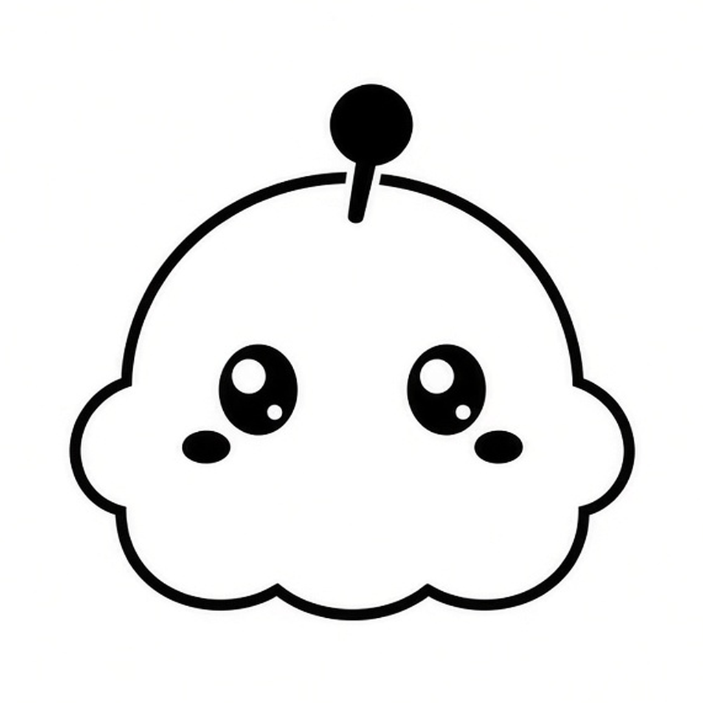

一个置顶在桌面一角的 Todo 工作台。每条线索都能绑定一个 agent 会话——线索是索引，会话是被索引的对象。
它是什么
每条 Todo 是一条线索，指向它背后那段 AI 会话。想接着干，从线索点进去就行。
常驻菜单栏的悬浮小面板，置顶在桌面一角，不抢窗口，也不会被埋掉。
数据存放在本机 ~/.ticktodo，不需要账号，也不依赖云端。
能做什么
360×520 的小窗口，可以一直置顶，也可以设成失焦自动隐藏。
完成只是改个状态，不会删掉，做过的事都还在，随时能回头找。
每条 Todo 都可以绑定一个 pi 会话，线索和上下文不再走散。
选好工作目录 cwd，一键把 Todo 内容通过剪贴板或启动参数送进 pi 会话。
装上 tick 扩展后，agent 可以直接调用 create_todo，把待办写回 Tick。
面板里的对话和 CLI 里的会话相互隔离，各聊各的，不串线。
怎么用
下载 macOS 版或用终端命令安装。Tick 会待在菜单栏，点一下就弹出面板。
在面板里写下 Todo，或者让装了 tick 扩展的 agent 直接替你 create_todo。
为这条 Todo 选好 cwd，一键投递到 pi。会话绑定在线索上，下次从这里接着来。